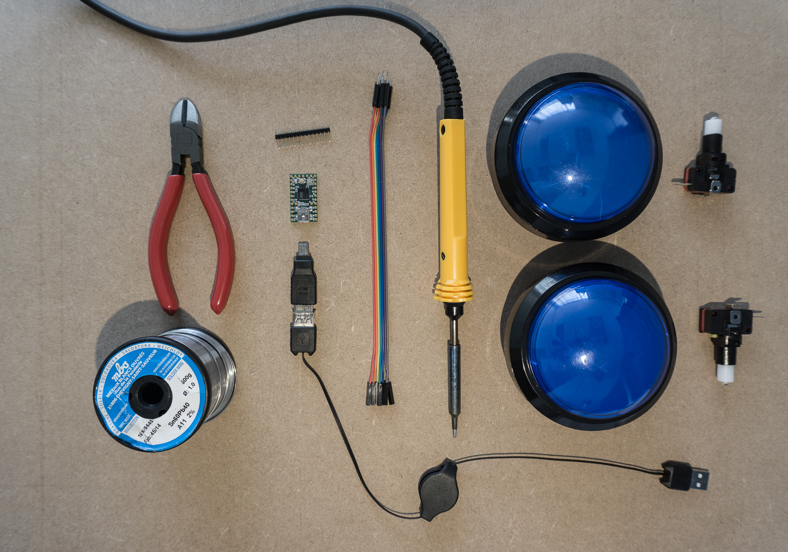
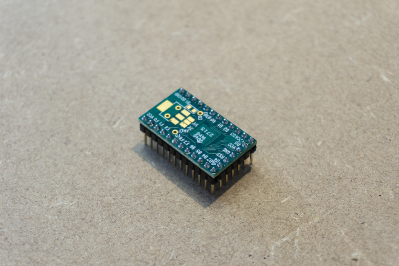
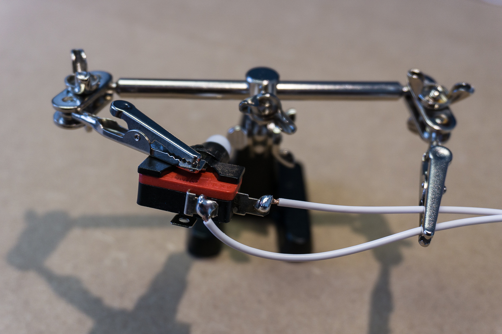
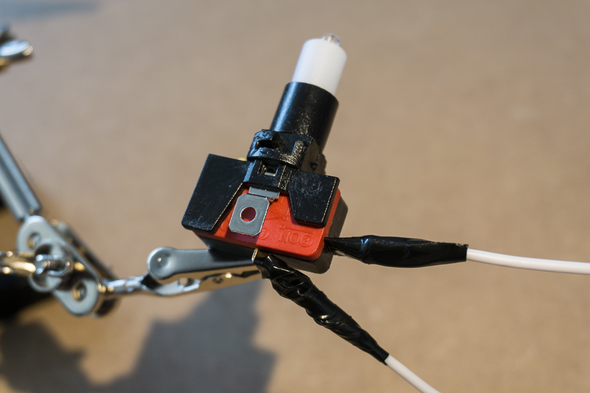

Making USB Push Buttons
—
If you are making an application that requires some basic true/false, yes/no, a/b/c/d input from a customer, a very reliable way to achieve this is by making USB push-buttons they can press. When plugged into your machine, these buttons will appear as a generic keyboard. Each different button-press will appear as a different keyboard keystroke. This is a really reliable, reuseable and easy-to-install way of mapping hardware input to your application.
Overview
To do this, you’re going to need to buy a few parts and be comfortable with some basic soldering (if not, start here!). We will have two big arcade-style push buttons that connected to a USB HID device. A HID ("human interface device") is a tiny microcontroller that is powered by a USB cable and can be programmed to perform various operations. These microcontrollers usually have input/output pins to allow you to interact with the device.
— The Teensy 2.0 from PJRC. This is cheap, tiny USB HID that can be very easily customized.
We are going to use the "Teensy" USB HID. This is a really cheap and easy to use device that can be programmed using the Arduino framework. In our case we are going to connect our two buttons to the USB HID device’s input pins and program the device to listen for presses from our buttons and then output particular keystrokes. These keystrokes can then be collected by your application for input. In our case, our two buttons will output either a ‘t’ for true, or a ‘f’ for false.
Shopping list

- x2 USB buttons. We use the "Massive Arcade Button with LED" from Adafruit.com. In the EU, you can get them from the Pimoroni.co.uk shop. Each of these buttons come in two parts - the big button itself as well as the actual underlying switch (that includes an LED that we won’t be using).
- x1 Teensy USB HID controller. We use the 2.0 board that can be bought on the PRJC.com website or Adafruit.com. You can also get the Teensy 3.2 from Pimoroni.co.uk
- x1 USB mini-b cable. You probably have one lying around, but if not you should pick one up from PRJC.com or Adafruit.com when you are buying the other parts.
- Some male/female jumper wires (optional)
- Some wire (single core is probably best although we are using stranded wire below).
- A soldering iron, solder, flux, wire cutters, electrical tape, …
Setting up the Teensy header pins
First thing to do is to set up our Teensy. The Teensy comes with some included header pins. If you want to reuse the Teensy board for other projects, it’s a good idea to first solder these header pins onto the Teensy instead of soldering wires straight onto the board itself. You can then use the jumper wires to more easily connect to the input pins.
— The header pins might not come in the correct configuration to fit on the board so you will need to trim/break them so that they fit in the holes.
— Solder the corner pins of each row of header pins first to keep everything in place. Then it's easier to make your way through the remaining pins without anything falling off!

Wiring up our physical buttons
With the header pins soldered to our Teensy we can now wire up our physical buttons. We are simply going to solder some wire to our buttons and a then a jumper cable to our wire to make it easy to connect to the Teensy. We’ll need four sections of equal-length wire as well as four jumper cables (two for each button).
First, connect the wire to the button. On this button there are four connections, two are for the actual switch itself and the other two are for an included LED. We are going to ignore the two LED connections and just connect directly to the switch:
— We wrap the wire around the connection to try make is more resistant to pulls and tugs. If used in an installation, these buttons might have to be moved around.


Now take the jumper cables and cut the male end off. Strip the wire back and wrap it into our existing wire for soldering.
— Wrapping the wires together before soldering should hopefully give us a strong join.
— Ideally our jumper cables would have more strands allowing us a stronger solder.
Finally twist the wires and tape everything up. Again, if these buttons are to used in anything that might move around, we want our connections as sturdy as possible and as resistant to pulls and tugs as possible so the more tape, twists and cable ties the better.
— Ideally our jumper cables would have more strands allowing us a stronger solder.
Now it’s time to connect our jumper cables to the header pins on the Teensy. We need to connect each button to a ground pin and an input pin. We’re going to use D4 for one button and B1 for the other:
Note that we are directly connecting our buttons to the input pins. Usually you would have to make a pull-up or pull-down circuit if you wanted to use buttons as input. Luckily, the Teensy already has pull-up circuits build into the input pins:
All of the pins have a pullup resistor which may be activated when the pin is an input. Just use pinMode() with INPUT_PULLUP.
…
The pullup resistors are useful when connecting pushbuttons that can connect the pin to ground (low), but when the button is not pressed there is no connection at all. The pullup resistor causes the voltage to be high when nothing is connected.
so we can simply connect our buttons directly.
Programming the Teensy
With all of our hardware set up, we can now program the Teensy to actually take the input from the buttons and output keystrokes.
To interact with our device, we need to first download the Teensy loader application. Once we have the application installed we can connect our device to our laptop via USB.
Communicating with the Teensy
The Teensy operates in two different modes: the default mode - which is what runs when you initially plug it in - is the application mode where whatever program you have installed runs in the background. For example, the default program installed on the Teensy simply blinks the little LED on the board. So when you first connect the Teensy you will see the LED start blinking:
— The default program that runs on the Teensy simply blinks the LED. We will replace this program with one which listens to our buttons and outputs keystrokes.
The second mode is the program mode where instead of executing the on-board program you can actually upload new programs to the device. To enter this mode, simply press the small little button on the Teensy board itself.
Writing our program
Once the board is ready to accept new programs, you have to actually create and upload them. To do this, there is the hard way and the easy way:
- The hard way is to write your application in C, compile it on your laptop and upload the compiled binary to the Teensy using the Teensy loader application that you download and installed a minute ago.
- The easy way is to install the Arduino IDE as well as the custom Teensyduino add-on libraries that make the Teensy device compatible and accessible via the Ardunio IDE.
We’re going to use the latter and make life easy. Follow the PJRC guide on installing both the Arduino IDE and the Teensyduino libraries, then open the Arduino IDE and create a new sketch.
We will setup two buttons. In both cases, when a button is pressed, the little LED on the board will be lit. Furthermore, when one button is pressed it will output a ‘t’ (true) character, while the other will output a ‘f’ (false) character.
#include <Bounce.h>
// Define our two buttons. We are using the
// 3rd party "bounce" library to more reliably
// read the button clicks.
//
// Read more:
// https://www.pjrc.com/teensy/td_libs_Bounce.html
Bounce buttonTrue = Bounce(PIN_D4, 10);
Bounce buttonFalse = Bounce(PIN_B1, 10);
// Setup the two buttons with the pins we
// have connected to and make sure to
// make use of the internal pull-up circuitry
void setup() {
pinMode(PIN_D4, INPUT_PULLUP); // True button
pinMode(PIN_B1, INPUT_PULLUP); // False button
pinMode(PIN_D6, OUTPUT); // LED
}
void loop() {
buttonTrue.update();
buttonFalse.update();
// Our 'true' button; outputs a 't' keypress
if (buttonTrue.fallingEdge()) {
Keyboard.print("t");
digitalWrite(PIN_D6, HIGH); // LED ON
}
if(buttonTrue.risingEdge()){
digitalWrite(PIN_D6, LOW); // LED OFF
}
// Our 'false' button; outputs a 'f' keypress
if (buttonFalse.fallingEdge()) {
Keyboard.print("f");
digitalWrite(PIN_D6, HIGH); // LED ON
}
if(buttonFalse.risingEdge()){
digitalWrite(PIN_D6, LOW); // LED OFF
}
}
You should see some successful output in the Arduino IDE console:
Hopefully, your program has been succesfully uploaded to the device!
Setting the device type
The last thing we need to do is to tell the Teensy in what capacity it should operate when we connect it to our laptop. Should it be a mouse? A serial device? A disk device? A toaster?
To do this, we simply go to the Tools > USB Type in the Arduino IDE file menu and select “Keyboard + Mouse + Joystick":